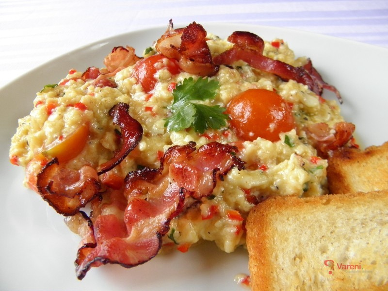

Na másle zpěníme cibulku, přidáme na kostičky nakrájenou šunku od kosti, osmahneme, zalijeme rozkvedlanými vejci se solí, za stálého míchání osmahneme ne zcela dosucha, stáhneme z plotny dřív, než jsou zcela hotová. Doporučujeme, jakmile se vajíčka na pánvi trochu „zatáhnou“, přidat trochu mléka, nevysuší se tolik. Podáváme na sucho opečených plátcích chleba, opepříme, posypeme mladou cibulkou nebo pažitkou.
Zde je výsledek:
Pro lepší představu si pusťte video zde kliknutím na tlačítko: